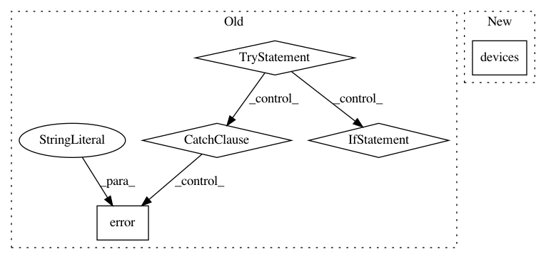

9d848731d903a8ee2296bbfc6746f4eb5143a446,homeassistant/components/binary_sensor/nest.py,,setup_platform,#Any#Any#Any#Any#,27
Before Change
def setup_platform(hass, config, add_devices, discovery_info=None):
Setup Nest binary sensors.
logger = logging.getLogger(__name__)
try:
for structure in nest.NEST.structures:
for device in structure.devices:
for variable in config["monitored_conditions"]:
if variable in BINARY_TYPES:
add_devices([NestBinarySensor(structure,
device,
variable)])
else:
logger.error("Nest sensor type: "%s" does not exist",
variable)
except socket.error:
logger.error(
"Connection error logging into the nest web service."
)
class NestBinarySensor(NestSensor, BinarySensorDevice):
Represents a Nest binary sensor.
@property
After Change
def setup_platform(hass, config, add_devices, discovery_info=None):
Setup Nest binary sensors.
for structure, device in nest.devices():
add_devices([NestBinarySensor(structure, device, variable)
for variable in config[CONF_MONITORED_CONDITIONS]])
In pattern: SUPERPATTERN
Frequency: 3
Non-data size: 5
Instances
Project Name: home-assistant/home-assistant
Commit Name: 9d848731d903a8ee2296bbfc6746f4eb5143a446
Time: 2016-04-11
Author: jaharkes@cs.cmu.edu
File Name: homeassistant/components/binary_sensor/nest.py
Class Name:
Method Name: setup_platform
Project Name: home-assistant/home-assistant
Commit Name: 9d848731d903a8ee2296bbfc6746f4eb5143a446
Time: 2016-04-11
Author: jaharkes@cs.cmu.edu
File Name: homeassistant/components/thermostat/nest.py
Class Name:
Method Name: setup_platform
Project Name: home-assistant/home-assistant
Commit Name: 9d848731d903a8ee2296bbfc6746f4eb5143a446
Time: 2016-04-11
Author: jaharkes@cs.cmu.edu
File Name: homeassistant/components/sensor/nest.py
Class Name:
Method Name: setup_platform